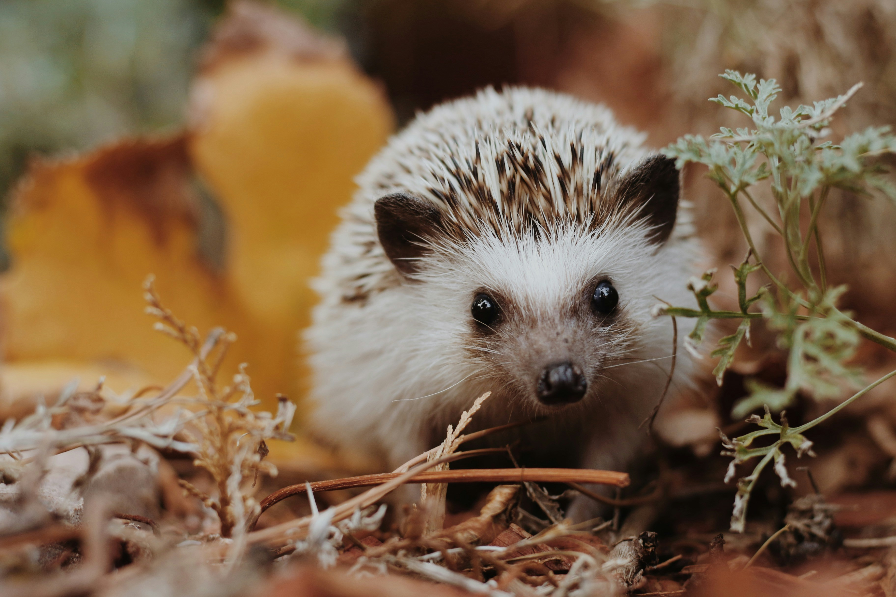

HEDGEHOG
Result
ハリネズミタイプ
小さな夜の散歩者
自分のペースを大切にする、慎重でマイペースなタイプです。
でも、知ってほしいこと
昼に起こされ、何度も触られることは、安心とは反対方向かもしれません。
自然では
夜に地表を歩き回り、隠れながら食べ物を探します。
カフェでは
昼間の接触、抱っこ、隠れ場所不足、温度管理、衛生管理が課題になります。

Result
自分のペースを大切にする、慎重でマイペースなタイプです。
昼に起こされ、何度も触られることは、安心とは反対方向かもしれません。
夜に地表を歩き回り、隠れながら食べ物を探します。
昼間の接触、抱っこ、隠れ場所不足、温度管理、衛生管理が課題になります。
福祉
夜行性で、休む時間と隠れ場所が大切です。
取引
繁殖方針、健康管理、展示中の休息時間が説明されているかを確認します。
保全
小さいから必要な環境も小さい、とは考えないことが大切です。
感染症
接触前後の手洗いと、寝ている個体を起こさない配慮が基本です。